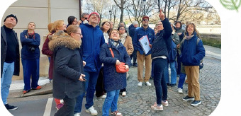
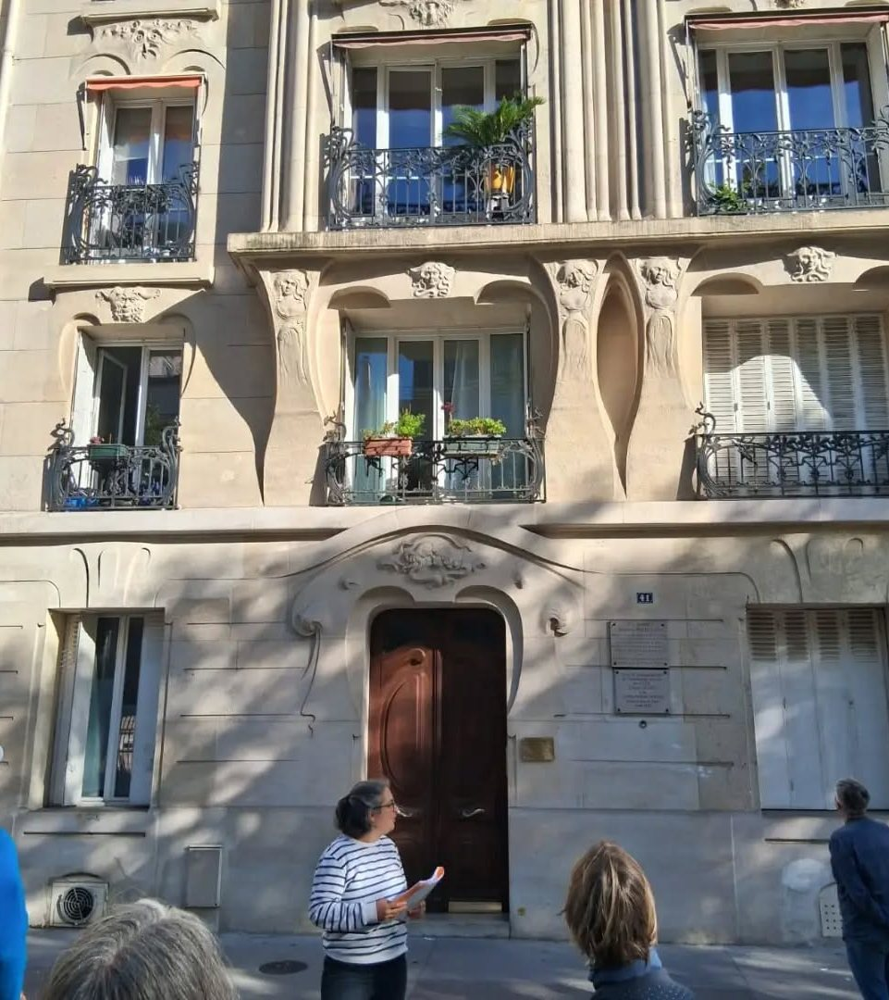

Grand public
Inscrivez-vous librement aux balades du samedi et du dimanche, seul, en couple, en famille ou entre amis.
Choisir une dateParis · quartiers & architecture
Des balades pour découvrir les quartiers, l’architecture et les histoires de Paris — et de l’Île-de-France — avec Marie-Tiyi Jalon.
Apprendre en chemin,
sans se prendre au sérieux.
Lever les yeux.
Découvrir la ville autrement.
Les balades
Des rives de la Seine aux rues de Montmartre, des façades remarquables aux traces du Paris antique : choisissez un thème, puis imaginez votre parcours avec Marie-Tiyi.
Grand public sur les dates du week-end, ou visites sur demande pour les seniors, les écoles et les groupes privés : choisissez la formule qui vous correspond.
Préparer votre sortieInscrivez-vous librement aux balades du samedi et du dimanche, seul, en couple, en famille ou entre amis.
Choisir une dateClubs, associations ou résidences seniors : des visites conviviales, adaptées au rythme et aux envies de votre groupe.
Organiser une visite seniorsÉcoles, collèges, lycées ou centres de loisirs : des sorties pédagogiques vivantes, animées par une enseignante expérimentée.
Organiser une sortie scolaireFamilles, amis, anniversaires, associations ou entreprises : privatisez une balade existante ou créons votre parcours sur mesure.
Privatiser une baladeImages d’illustration générées pour accompagner ces balades.
Les prochaines balades publiques
Faites glisser vers la droite ou utilisez les flèches pour découvrir les autres dates. Voir tout le programme
Toutes les balades proposées en ce moment — d’autres viendront s’ajouter au fur et à mesure.
01 / Paris, histoire & quartiers
02 / Arts & architecture
03 / Jardins, parcs & lieux de mémoire
Toutes ces balades peuvent être organisées sur demande (seniors, écoles, groupes privés) à Paris et en Île-de-France. D’autres balades viendront s’ajouter au fur et à mesure — tarifs de groupe sur demande.
La saison 2026–2027
Chaque samedi et dimanche, de 10 h 30 à 12 h, une promenade pour explorer une époque, un quartier ou une façon de voir Paris et ses alentours.
Les places restantes sont indiquées pour chaque date et actualisées régulièrement.
Chargement du programme…
Un lieu de devoir et de mémoire.
Réserver une placeLe programme 2026–2027 est terminé. Écrivez à Marie-Tiyi pour connaître les prochaines dates ou organiser une balade à la demande.
Aucune balade ne correspond à ces critères.
Les dates passées sont masquées automatiquement. Certaines images sont des illustrations générées : elles ne constituent pas des photographies documentaires des lieux.

Le plaisir de découvrir en marchant
Du patrimoine aux paysages, le nez au vent, laissez-vous surprendre par les histoires cachées dans les lieux que l’on croyait connaître.

Votre guide
Animatrice culturelle et conteuse d’histoires
Je suis animatrice culturelle et conteuse d’histoires.
Après des études d’histoire et de géographie, alliées à une formation de sculptrice et 25 ans d’enseignement, je crée mon entreprise pour proposer des balades culturelles, permettant d’allier la marche, la contemplation et la joie de la découverte.
Rejoignez-moi pour une balade culturelle guidée à la découverte des trésors cachés de Paris et de l’Ile-de-France.
Mes balades culturelles guidées vous permettront de découvrir des petites histoires dans la Grande, d’admirer des monuments et paysages, le nez au vent, dans une ambiance agréable où on apprend sans se prendre au sérieux.
En complément des visites guidées publiques, il est aussi possible de privatiser une visite (pour une sortie scolaire, une fête de famille, un temps entre amis, un rallye, une journée d’entreprise, un anniversaire ou toute autre occasion)
Organiser une sortie privéeAvant de partir
Tout ce qu’il faut savoir pour préparer votre prochaine promenade, publique ou privée.
Groupes de seniors, sorties scolaires, familles, amis, associations ou entreprises : chaque visite sur demande s’adapte à votre public et au quartier souhaité.
Tarifs de groupe sur demandeRèglement par virement bancaire, Wero ou espèces.
25 personnes maximum par visite publique.
RÉSERVATION & SORTIES SUR MESURE
Choisissez votre formule, indiquez votre groupe et laissez vos coordonnées. Pour une visite publique, le total et le montant estimé se calculent automatiquement.
Samedi et dimanche · 10 h 30–12 h
25 personnes maximum, enfants compris.
Virement bancaire, Wero ou espèces.